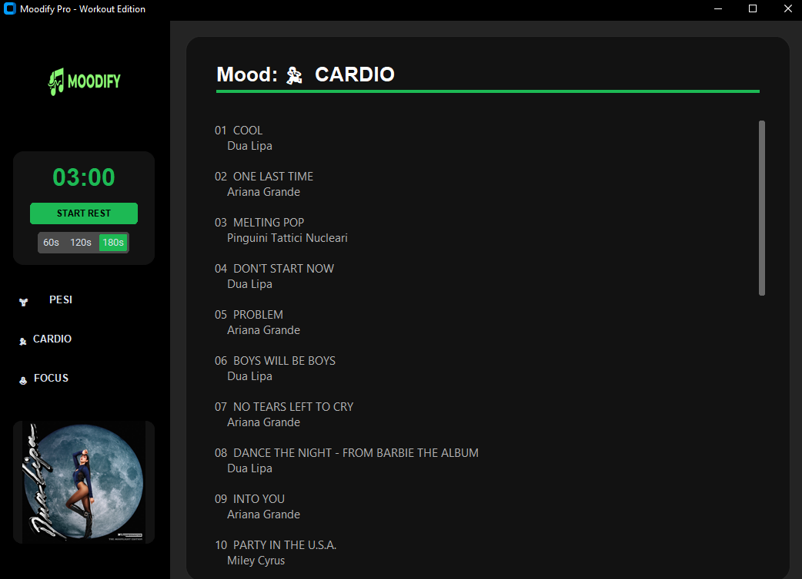

Durante sessioni di allenamento ad alta intensità, la gestione manuale della musica sullo smartphone è fonte di distrazione. Ho sviluppato Moodify Pro per centralizzare il controllo del workout su una singola interfaccia desktop "zero-distraction".
Scarica il pacchetto completo contenente lo script Python e gli asset grafici:
Scarica Moodify.exeUtilizzo della libreria Spotipy per l'autenticazione sicura e il filtraggio dinamico della libreria utente:
# Integrazione Spotipy con protocollo OAuth2
sp = spotipy.Spotify(auth_manager=SpotifyOAuth(
client_id=CLIENT_ID,
client_secret=CLIENT_SECRET,
redirect_uri=REDIRECT_URI,
scope="user-library-read"
))
# Filtraggio asincrono basato su keyword musicali
if any(k in track_name.lower() for k in FILTRI["pesi"]):
brani_compatibili.append(track)
Timer di recupero multithread per non bloccare l'interfaccia grafica durante il countdown:
# Logica del Timer con threading per mantenere la UI reattiva
def countdown(self):
while self.seconds_left > 0 and self.timer_running:
time.sleep(1)
self.seconds_left -= 1
self.update_timer_label()
if self.seconds_left == 0:
self.notify_user("GO! 🔥")
Design moderno in Dark Mode ispirato a Spotify, ottimizzato per la leggibilità durante l'attività fisica:
